Глава 6.9. Цитаты и выделенные мысли в потоке текста
Семантическая вёрстка цитат
Семантическое значение цитаты — внешний контент, то есть <q> — это строчный
элемент, содержащий
материалы не уникальные, имеющие другой источник. А
<blockquote>, соответственно, тег для
выделенных, вынесенных в отдельную секцию цитат.
Цитата внутри текста может верстаться тегом <q> и не выходит из абзаца. Такие
цитаты могут быть
выделены другим начертанием. До и после содержимого тега <q> браузер
автоматически проставляет
кавычки подходящего для языка документа вида. Для русского языка проставляются „лапки“
или
«ёлочки». Переопределить кавычки можно с помощью CSS-свойства quotes:
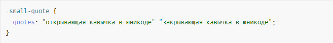
Пример кода
Вместо <q> можно просто использовать принятые на вашем сайте кавычки, спецификация
разрешает это.
Использовать <q> для контента, не являющегося цитатой (для сарказма или
переводных слов,
выделяющихся кавычками) — не семантично.
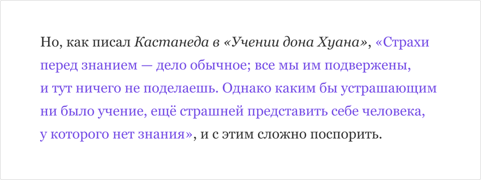
Цитата встроена в абзац, наклон в источнике — по умолчанию, саму цитату мы выделили
цветом
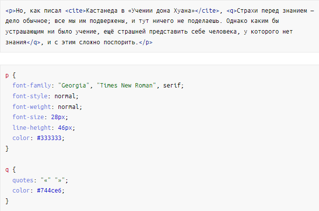
Пример кода
Мы же поговорим об отдельных и специальным образом оформленных цитатах.
Они оборачиваются в тег
<blockquote>: это не только текстовый элемент, но и элемент для разметки секций
(спецификация). Это
означает, что у цитаты могут быть свои заголовки, хедер и футер и текстовые элементы.
У цитат есть своя специфика вёрстки. Например, есть атрибут cite, который также может
выступать как
тег <cite>, оба применяются для указания источника (не только для
источника-сайта, но и для автора
высказывания, для названия произведения, ссылки на первоисточник). Атрибут cite нужен
для
соблюдения авторского права, визуально он не отображается:
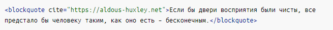
Пример кода
Вот пример оформленной цитаты:
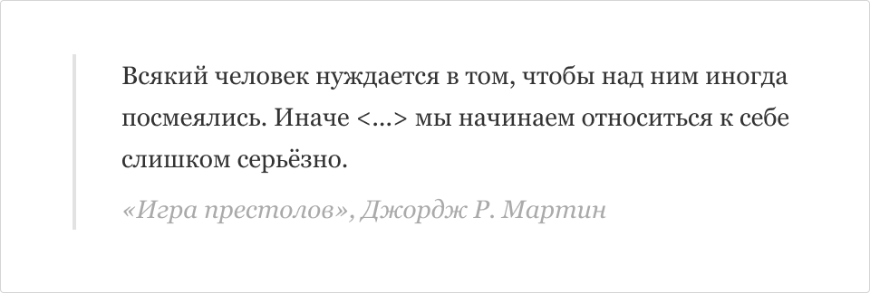
Цитата сделана отдельным блоком, подпись обособлена, есть рамка слева
Вёрстка элемента
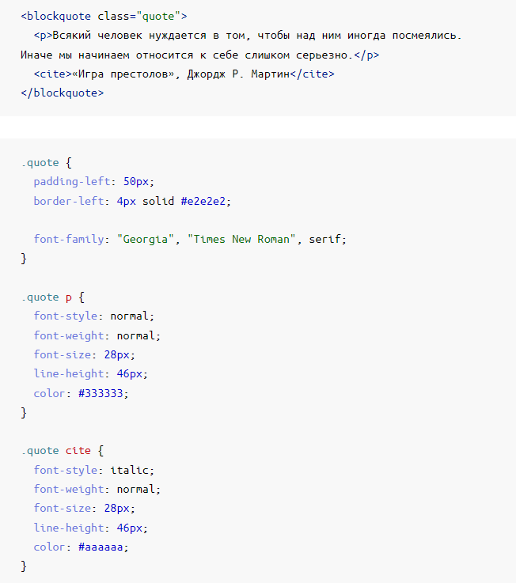
Пример кода
В случае, если это не цитата в полном смысле слова, а акцентная мысль, более важное предложение в
потоке текста, будет правильнее верстать такую мысль другими тегами, например,
<p> и <strong> с классом, или ``.
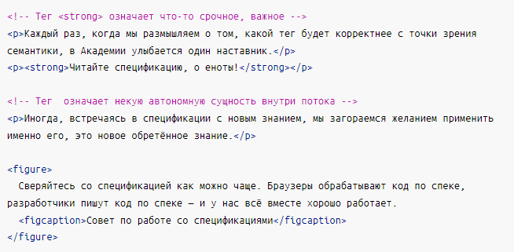
Пример кода
Это вопрос семантической вёрстки, и мы считаем, что разделять цитаты (со внешним источником) и
акцентные мысли правильно и удобно для пользователей и роботов.
Цитата простая, незатейливая, без дополнительных элементов
Самый стандартный вариант оформления цитаты — «поиграть со шрифтами». Например, укрупнённый шрифт,
изменённый цвет, другое начертание: курсив или полужирное. Возможно другое семейство шрифтов,
увеличенное межстрочное расстояние, возможно, все буквы будут прописные. Обычно у подписи кегль
меньше, а начертание контрастнее.
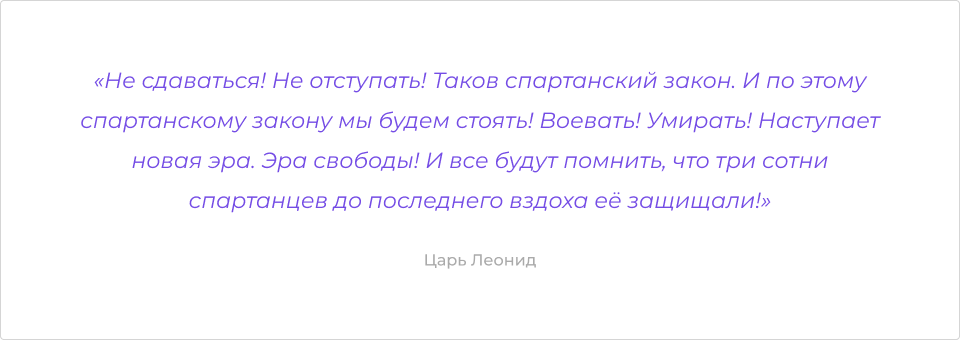
Цитата встроена в абзац, наклон в источнике — по умолчанию, саму цитату мы выделили
цветом
Вёрстка элемента
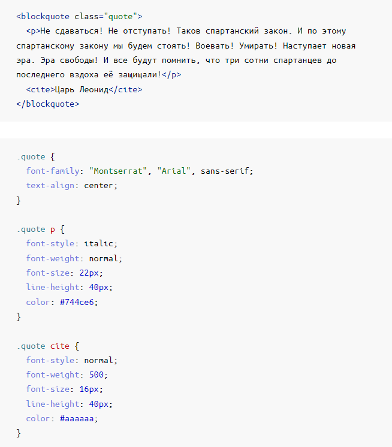
Пример кода
Второй по типичности — то же самое, но в дополнение появляется обводка или фон. Фон обычно неброский,
просто заливка. Обводка может быть со всех сторон, только слева, или сверху и снизу.
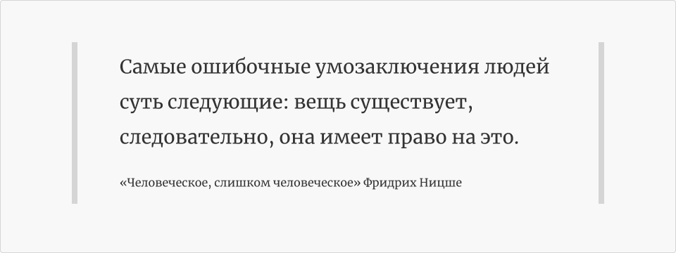
Цитата встроена в абзац и выделена рамками по бокам
Вёрстка элемента
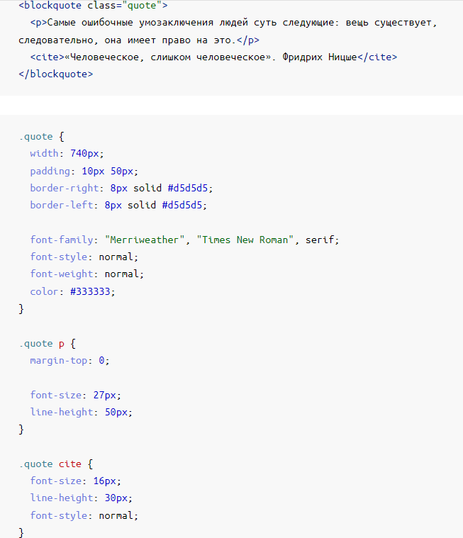
Пример кода
Обратный отступ
Рассмотрим ещё один пример. Это вроде как цитата, но в данном контексте это акцентная мысль. Стоит
подать именно так.
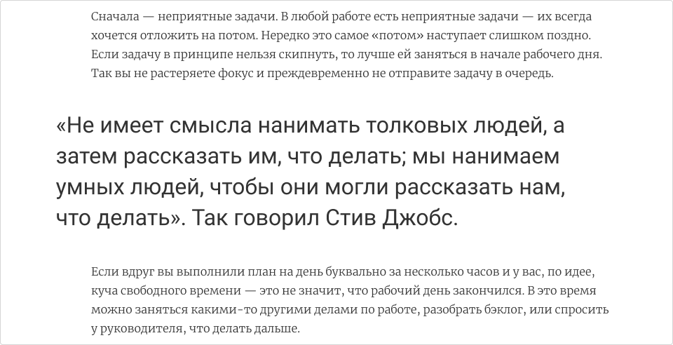
Пример стилизации обратного отступа
Вёрстка элемента
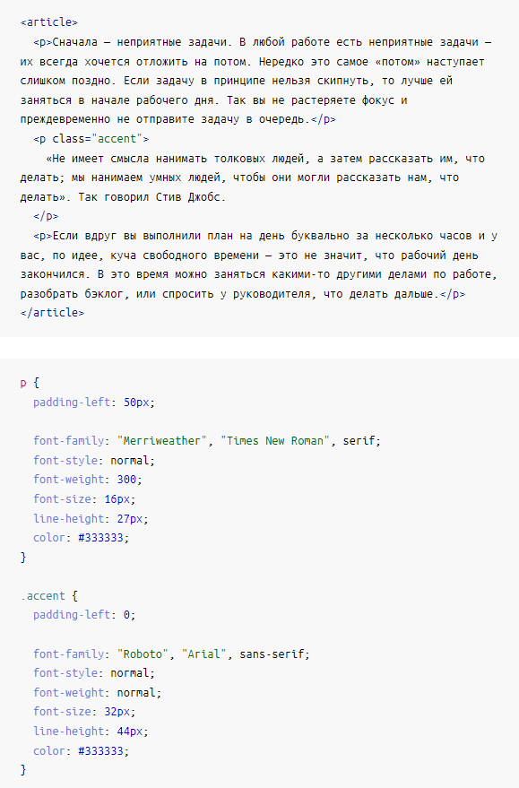
Пример кода
Цитата затейливая, с кавычками
Зачастую цитата оформляется с помощью акцентных кавычек, они могут быть вставлены как символы шрифта
или юникода, а могут — как графика.
Опишем максимально «закрученную» цитату.
В начале ставятся укрупнённые открывающие кавычки по типу буквицы. Это удобно, «дёшево» с
точки зрения занимаемого места, абсолютно очевидно для пользователя, может быть довольно
красиво. Размер этих кавычек и их расположение бывает очень оригинальным, у них может
измениться цвет и даже семейство шрифта. Или их можно отрисовать и заверстать на сайт как
графический элемент. В примере ниже кавычка — это изначально символ шрифта Oranienbaum, но
мы её подключим отдельным векторным изображением, чтобы не загружать весь шрифт ради одного
декоративного символа.
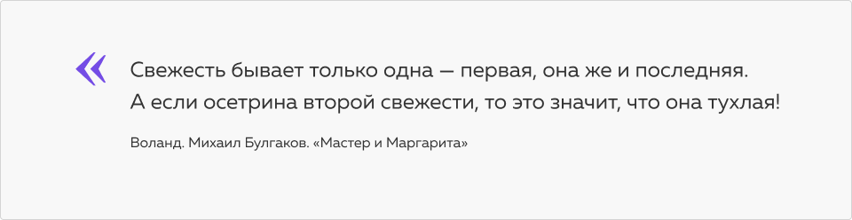
Цитата с укрупнённой открывающей кавычкой по типу буквицы
Вёрстка элемента
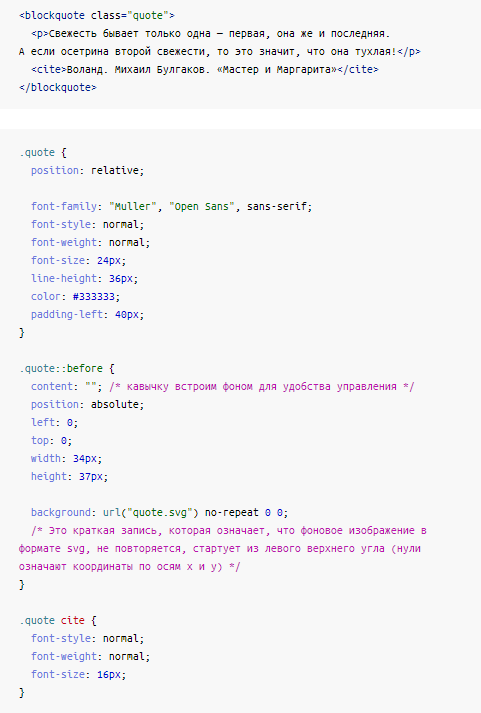
Пример кода
В оформлении появляется закрывающая кавычка. Или кавычка «переезжает» под текст.
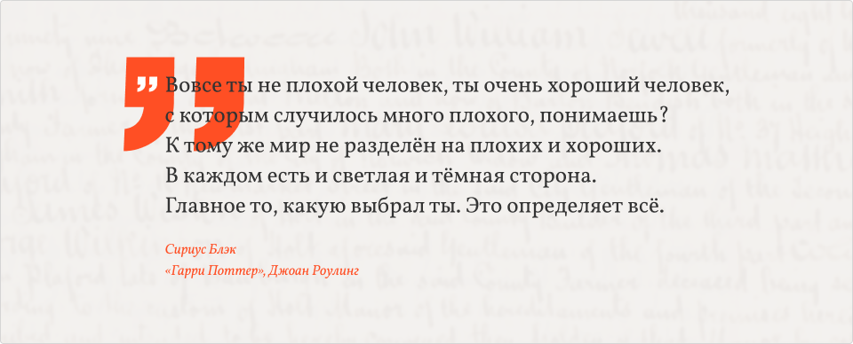
Цитата с целыми двумя открывающими кавычками
Вёрстка элемента
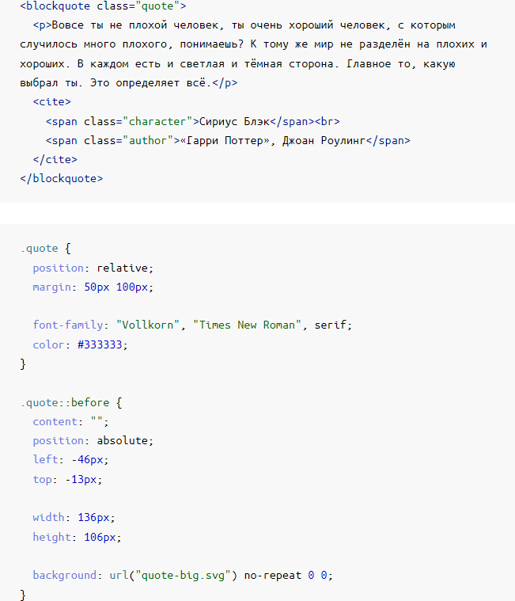
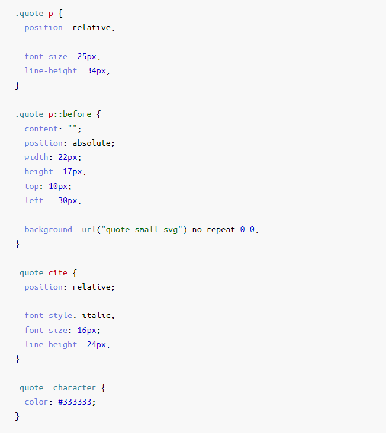
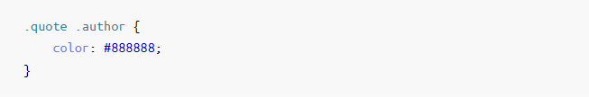
Пример кода
Ещё один частый приём оформления цитат — кавычка используется как декоративный элемент,
который располагается над цитатой и выравнивается по центру.
Декоративный элемент с кавычкой для оформления цитаты
Вёрстка элемента
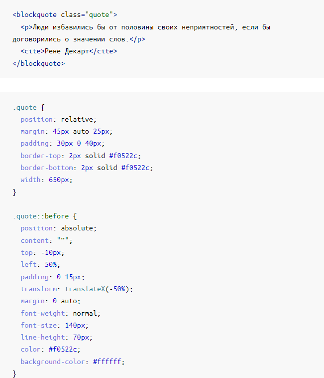
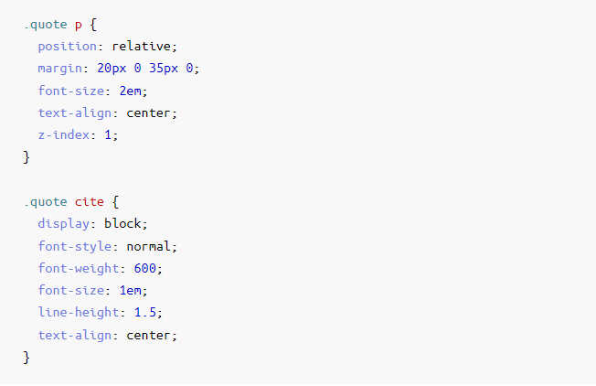
Пример кода
В оформлении цитаты может появиться обводка (выглядит как <legend> ) или
фоновая подложка,
например, в виде мазка кисти, или паттерн, или декоративные полосы.